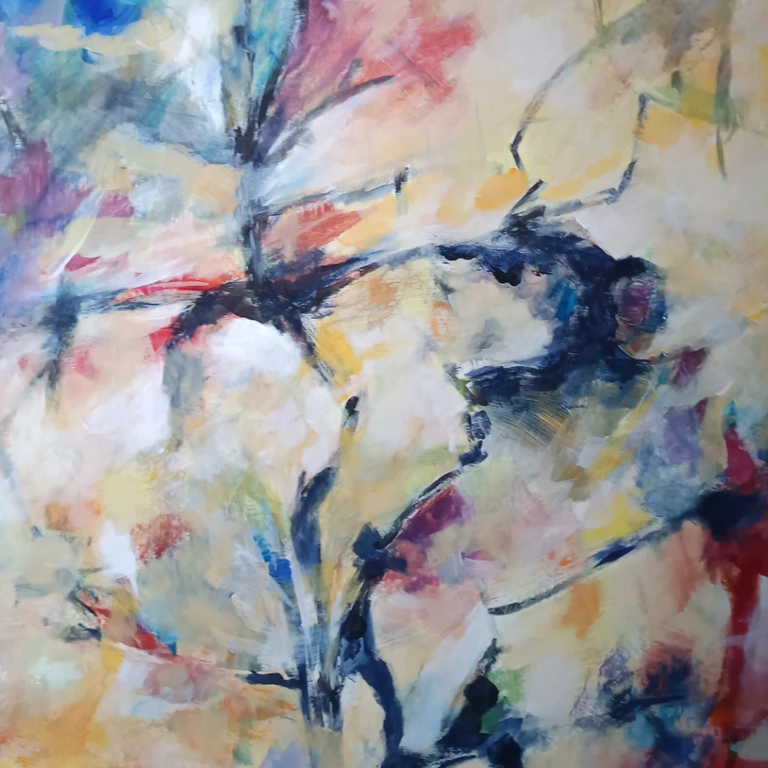
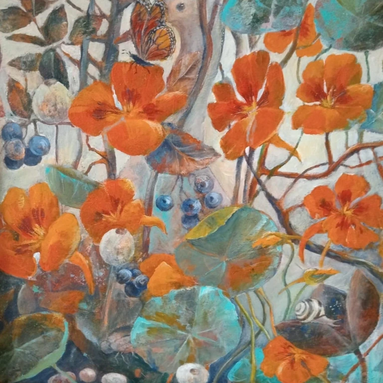

Ty zajmujesz się sztuką. My zajmiemy się Twoją stroną.
Otrzymujesz gotową, w pełni funkcjonalną galerię internetową opartą na naszym autorskim projekcie.
Realizacje
Nasz projekt w internecie. Sprawdź sam, jak działa.
Odwiedź stronę.

Trzy kroki do własnej galerii
Wybierasz gotowe rozwiązanie
Kontakt
Zapraszamy